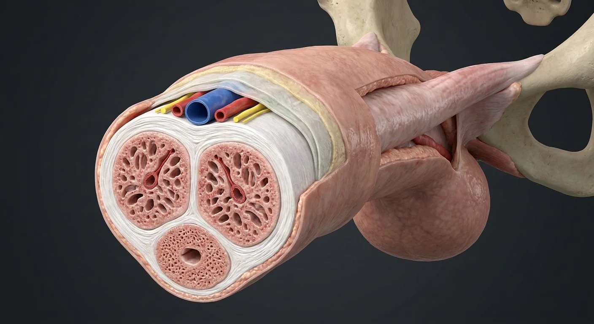

How this part of the body works
The paired corpora cavernosa are enveloped by strong tunica albuginea and form the main rigid erectile compartment; the ventral corpus spongiosum surrounds the penile urethra and expands distally as the glans. Deep penile arteries feed cavernous spaces. Parasympathetic-associated cavernous neural signaling relaxes smooth muscle, increasing arterial inflow and restricting subtunical venous outflow. The spongiosum remains comparatively compliant to protect urethral patency.
Read the anatomy, part by part
These 16 structures describe anatomy related to the chapter’s regional illustration. Each entry separates location, function and a clinical point.
Paired corpora cavernosa
Two dorsal longitudinal erectile cylinders that unite in shaft and separate proximally as crura.
What it doesPrimary rigid erectile compartment.
Clinical connectionFibrous tunica helps compress emissary venous outflow.
Corpus spongiosum
Single ventral erectile column surrounding spongy urethra.
What it doesEngorges without compressing urethral lumen closed.
Clinical connectionIts distal expansion is the glans penis.
Tunica albuginea
Strong fibrous sheath encasing cavernosa, with distinct collagen layers.
What it doesResists expansion and aids venous occlusion.
Clinical connectionDisruption during trauma can constitute penile fracture.
Cavernosal trabeculae
Smooth-muscle and connective-tissue struts bordering interconnected blood sinusoids.
What it doesRelaxation permits filling of cavernous lacunae.
Clinical connectionVascular dysfunction can impair rigidity.
Deep penile arteries
Internal pudendal branches traveling within each corpus cavernosum.
What it doesFeed cavernosal tissue.
Clinical connectionNot the same as superficial dorsal arteries.
Helicine arteries
Small coiled branches entering cavernous sinusoidal spaces.
What it doesDilate as smooth muscle relaxes, increasing inflow.
Clinical connectionReduced dilation is one vascular cause of erectile dysfunction.
Subtunical venules
Venules under the tunica draining cavernous lacunae.
What it doesTheir compression limits venous outflow during erection.
Clinical connectionVeno-occlusive dysfunction prevents maintained rigidity.
Deep dorsal vein
Midline dorsal venous channel deep to Buck fascia between dorsal arteries.
What it doesDrains glans and erectile compartments to pelvic plexuses.
Clinical connectionLies in dorsal neurovascular bundle, not within the urethra.
Dorsal arteries
Paired internal pudendal branches near dorsal vein and nerves.
What it doesSupply glans and penile coverings.
Clinical connectionDifferent course from deep cavernosal arteries.
Dorsal nerves
Pudendal sensory branches along dorsal shaft.
What it doesCarry cutaneous and glanular sensation.
Clinical connectionMotor/vascular autonomic cavernous fibers have a different route.
Cavernous nerves
Pelvic plexus fibers traveling toward erectile smooth muscle.
What it doesMediate vasodilation and erection.
Clinical connectionCan be injured in pelvic/prostate surgery.
Buck fascia
Deep investing fascia around erectile bodies and dorsal neurovascular bundle.
What it doesProvides a deep connective-tissue envelope.
Clinical connectionCompare with superficial Dartos fascia.
Dartos fascia
Superficial membranous layer containing smooth muscle beneath penile skin.
What it doesAllows skin mobility and continuity with superficial perineal fascia.
Clinical connectionFluid can track through connected superficial fascial planes.
Spongy urethra
Penile segment of urethra coursing within corpus spongiosum.
What it doesConveys urine and semen at different times.
Clinical connectionUrethral injury can accompany trauma.
Glans penis
Distal expansion of corpus spongiosum over tips of corpora cavernosa.
What it doesContains terminal urethral opening and sensory receptors.
Clinical connectionDistinct from the cavernous bodies beneath.
Penile crura and bulb
Cavernous crura attach to ischiopubic rami; proximal spongiosum forms bulb in perineum.
What it doesAnchor penile root and receive inflow.
Clinical connectionIschiocavernosus covers crura; bulbospongiosus surrounds bulb.
Deeper structures and tissue layers
These 4 additional entries give anatomical context. They are deliberately not assigned a photographic pin on the regional image.
Cavernosal septum
Fibrous partition between right and left corpora cavernosa, incomplete distally in places.
What it doesConnects paired erectile bodies.
Clinical connectionIntercavernosal communication varies.
Emissary veins
Veins traversing tunica albuginea to drain cavernous spaces.
What it doesLink sinusoidal blood to deeper venous outflow.
Clinical connectionCompression during tumescence reduces drainage.
Bulbourethral arterial branch
Internal pudendal-derived branch toward proximal spongiosum and bulb.
What it doesSupplies bulb and surrounding urethral tissue.
Clinical connectionBranching pattern varies with individual anatomy.
Ischiocavernosus muscle
Superficial perineal muscle covering each penile crus.
What it doesCompresses crus and supports rigidity.
Clinical connectionPudendal motor branches supply it.
Five questions about Penile erectile tissue
Short answers grounded in the structures described above. Use the illustrated guide for anatomical context.
What are the three erectile bodies of the penis?
Two paired corpora cavernosa form the main dorsal erectile cylinders. A single corpus spongiosum surrounds the urethra and expands into the glans.
What does the tunica albuginea do in erectile tissue?
It is a dense connective-tissue covering around erectile compartments, particularly strong around the corpora cavernosa.
What are the paired corpora cavernosa?
Two dorsal longitudinal erectile cylinders that unite in shaft and separate proximally as crura. Function: Primary rigid erectile compartment.
Where is the tunica albuginea located?
Strong fibrous sheath encasing cavernosa, with distinct collagen layers. Function: Resists expansion and aids venous occlusion.
What is the function of the deep penile arteries?
Function: Feed cavernosal tissue. Internal pudendal branches traveling within each corpus cavernosum.
Related anatomy guides
Follow these connected structures and body systems in the illustrated atlas.
 Male reproductive systemSperm production in the scrotum, maturation in the epididymis, and a shared exit with urine.↗
Male reproductive systemSperm production in the scrotum, maturation in the epididymis, and a shared exit with urine.↗ Prostate, ducts & penisProstatic zones and the urinary–ejaculatory crossing: urethra, verumontanum, ducts, seminal vesicles and erectile bodies.↗
Prostate, ducts & penisProstatic zones and the urinary–ejaculatory crossing: urethra, verumontanum, ducts, seminal vesicles and erectile bodies.↗ Male pelvis & perineumThe male pelvic floor in sagittal section: bladder, prostate and urethra in front, rectum and anal canal behind, and the muscular sheet that holds them up.↗
Male pelvis & perineumThe male pelvic floor in sagittal section: bladder, prostate and urethra in front, rectum and anal canal behind, and the muscular sheet that holds them up.↗ Clitoral erectile complexA three-dimensional neurovascular and erectile complex: paired crura, body, glans and closely related vestibular bulbs.↗
Clitoral erectile complexA three-dimensional neurovascular and erectile complex: paired crura, body, glans and closely related vestibular bulbs.↗Further reading
General anatomy references and related source chapters for continued study. These links do not make the digital illustrations clinical images or certify every anatomical variant.
This educational page is not medical advice and has not undergone formal clinical peer review. Spotted an error? Contact the editor.
Open the realistic interactive plate, label lines, focus view and self-test.